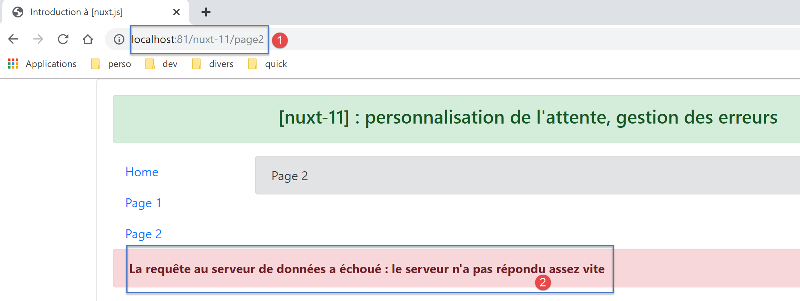

14. Exemple [nuxt-11] : personnalisation de l’image d’attente
Par défaut, l’image d’attente de [nuxt] est une barre de progression. L’exemple [nuxt-11] montre qu’on peut la remplacer par sa propre image d’attente :

L’exemple [nuxt-11] montre également comment gérer des erreurs de chargement.

L’exemple [nuxt-11] est obtenu initialement par recopie de l’exemple [nuxt-10] :

Nous allons ajouter en [1], un plugin pour le client dont le rôle sera de gérer des événements entre composants.
14.1. Le plugin [event-bus]
Le plugin [event-bus] sera exécuté par le client et le serveur, mais on verra qu’il ne fonctionne pas côté serveur. Son code est le suivant :
// on crée un bus d'événements entre les vues
import Vue from 'vue'
export default (context, inject) => {
// le bus d'événements
const eventBus = new Vue()
// injection d'une fonction [eventBus] dans le contexte
inject('eventBus', () => eventBus)
}
- ligne 5 : le bus d’événements est une instance de la classe [Vue]. En effet, celle-ci a les méthodes pour gérer des événements :
- [$emit] : pour émettre un événement ;
- [$on] : pour se mettre à l’écoute d’un événement particulier ;
Ce bus d’événements ne gèrera qu’un événement, [loading], qui sera utilisé par les pages pour démarrer / arrêter l’animation d’attente de la fin d’une fonction asynchrone ;
- ligne 7 : on crée une fonction [$eventBus] (1er argument) dont le rôle sera de rendre l’objet [eventBus] que l’on vient de créer (2ième argument). Cette fonction est injectée dans le contexte pour qu’elle soit disponible dans les objets [context.app] et l’objet [this] des pages ;
14.2. Le layout [default.vue]
Le layout [default.vue] évolue de la façon suivante :
<template>
<div class="container">
<b-card>
<!-- un message -->
<b-alert show variant="success" align="center">
<h4>[nuxt-11] : personnalisation de l'attente, gestion des erreurs</h4>
</b-alert>
<!-- la vue courante du routage -->
<nuxt />
<!-- loading -->
<b-alert v-if="showLoading" show variant="light">
<strong>Requête au serveur de données en cours...</strong>
<div class="spinner-border ml-auto" role="status" aria-hidden="true"></div>
</b-alert>
<!-- erreur de chargement -->
<b-alert v-if="showErrorLoading" show variant="danger">
<strong>La requête au serveur de données a échoué : {{ errorLoadingMessage }}</strong>
</b-alert>
</b-card>
</div>
</template>
<script>
/* eslint-disable no-console */
export default {
name: 'App',
data() {
return {
showLoading: false,
showErrorLoading: false
}
},
// cycle de vie
beforeCreate() {
console.log('[default beforeCreate]')
},
created() {
console.log('[default created]')
// on écoute l'évt [loading]
this.$eventBus().$on('loading', this.mShowLoading)
// ainsi que l'évt [errorLoadingMessage]
this.$eventBus().$on('errorLoading', this.mShowErrorLoading)
},
beforeMount() {
console.log('[default beforeMount]')
},
mounted() {
console.log('[default mounted]')
},
methods: {
// gestion du chargement
mShowLoading(value) {
console.log('[default mShowLoading], showLoading=', value)
this.showLoading = value
},
// erreur de chargement
mShowErrorLoading(value, errorLoadingMessage) {
console.log('[default mShowErrorLoading], showErrorLoading=', value, 'errorLoadingMessage=', errorLoadingMessage)
this.showErrorLoading = value
this.errorLoadingMessage = errorLoadingMessage
}
}
}
</script>
- lignes 11-14 : l’animation d’attente. Elle n’est affichée que si la propriété [showLoading] est vraie (ligne 29) ;
- lignes 16-18 : le message d’erreur du chargement. Il n’est affiché que si la propriété [showErrorLoading] (ligne 30) est vraie ;
- lignes 29-30 : au chargement initial du composant, l’animation d’attente est cachée ainsi que le message d’erreur ;
- lignes 37-43 : lorsqu’elle est créée, la page écoute l’événement [loading] (1er argument) sur le bus d’événements créé par le plugin. A sa réception, elle fait exécuter la méthode [mShowLoading] des lignes 52-55 (2ième argument) ;
- lignes 52-55 : la valeur reçue par la méthode [mShowLoading] sera un booléen true / false. Elle sert à montrer / cacher le message d’attente ;
- lignes 41-42 : lorsqu’elle est créée, la page écoute l’événement [errorLoading] (1er argument) sur le bus d’événements créé par le plugin. A sa réception, elle fait exécuter la méthode [mShowErrorLoading] des lignes 57-61 (2ième argument) ;
- ligne 57 : la méthode [mShowErrorLoading] reçoit deux arguments :
- le 1er argument est un booléen true / false pour montrer / cacher le message d’erreur ;
- le 2ième argument n’est présent que s’il y a eu erreur. Il représente le message d’erreur à afficher ;
- les logs des lignes 53 et 58 vont nous montrer que les méthodes [showLoading] et [showErrorLoading] ne sont pas exécutées côté serveur ;
14.3. La page [page1]
Le code de la page [page1] évolue de la façon suivante :
<!-- vue n° 1 -->
<template>
<Layout :left="true" :right="true">
<!-- navigation -->
<Navigation slot="left" />
<!-- message-->
<b-alert slot="right" show variant="primary"> Page 1 -- result={{ result }} </b-alert>
</Layout>
</template>
<script>
/* eslint-disable no-console */
/* eslint-disable nuxt/no-timing-in-fetch-data */
import Navigation from '@/components/navigation'
import Layout from '@/components/layout'
export default {
name: 'Page1',
// composants utilisés
components: {
Layout,
Navigation
},
// données asynchrones
asyncData(context) {
// log
console.log('[page1 asyncData started]')
// début attente
context.app.$eventBus().$emit('loading', true)
// pas d'erreur
context.app.$eventBus().$emit('errorLoading', false)
// on rend une promesse
return new Promise(function(resolve, reject) {
// on simule une fonction asynchrone
setTimeout(function() {
// fin attente
context.app.$eventBus().$emit('loading', false)
// log
console.log('[page1 asyncData finished]')
// on rend le résultat asynchrone - un nombre aléatoire ici
resolve({ result: Math.floor(Math.random() * Math.floor(100)) })
}, 5000)
})
},
// cycle de vie
beforeCreate() {
console.log('[page1 beforeCreate]')
},
created() {
console.log('[page1 created]')
},
beforeMount() {
console.log('[page1 beforeMount]')
},
mounted() {
console.log('[page1 mounted]')
}
}
</script>
- les modifications ont lieu dans la fonction [asyncData] des lignes 26-47 ;
- lignes 29-30 : avant que ne commence la fonction asynchrone on émet l’événement [loading] à destination des autres pages de l’application. On rappelle que dans [asyncData], on n’a pas accès à l’objet [this] pas encore créé. On utilise alors le contexte que reçoit en argument la fonction [asyncData] (ligne 26) ;
- ligne 30 : on utilise le bus d’événements pour indiquer que le chargement va commencer ;
- ligne 38 : on utilise le bus d’événements pour indiquer que le chargement est terminé ;
Note : A l’exécution, lorsque la page [page1] est demandée au serveur, on ne voit pas l’image d’attente. Dans les logs on voit que côté serveur la méthode [default.mShowLoading] n’est pas appelée. De toute façon, voir l’image d’attente n’a pas de sens lorsque la page est demandée au serveur. Celui-ci n’envoie la page au navigateur client qu’une fois la fonction [asyncData] terminée. L’image d’attente est alors inutile. Ce sera le cas pour toutes les pages de l’application demandées directement au serveur.
14.4. La page [index]
Le code de la page [index] est le suivant :
<!-- page principale -->
<template>
<Layout :left="true" :right="true">
<!-- navigation -->
<Navigation slot="left" />
<!-- message-->
<b-alert slot="right" show variant="warning">
Home
</b-alert>
</Layout>
</template>
<script>
/* eslint-disable no-undef */
/* eslint-disable no-console */
/* eslint-disable nuxt/no-env-in-hooks */
/* eslint-disable nuxt/no-timing-in-fetch-data */
import Navigation from '@/components/navigation'
import Layout from '@/components/layout'
export default {
name: 'Home',
// composants utilisés
components: {
Layout,
Navigation
},
// données asynchrones
asyncData(context) {
// log
console.log('[page1 asyncData started]')
// début attente
context.app.$eventBus().$emit('loading', true)
// pas d'erreur
context.app.$eventBus().$emit('errorLoading', false)
// on rend une promesse
return new Promise(function(resolve, reject) {
// on simule une fonction asynchrone
setTimeout(function() {
// fin attente
context.app.$eventBus().$emit('loading', false)
// log
console.log('[page1 asyncData finished]')
// on rend une erreur
reject(new Error("le serveur n'a pas répondu assez vite"))
}, 5000)
}).catch((e) => context.error({ statusCode: 500, message: e.message }))
},
// cycle de vie
beforeCreate() {
console.log('[home beforeCreate]')
},
created() {
console.log('[home created]')
},
beforeMount() {
console.log('[home beforeMount]')
},
mounted() {
console.log('[home mounted]')
// pas d'erreur
this.$eventBus().$emit('errorLoading', false)
}
}
</script>
- lignes 30-49 : la fonction [asyncData] est identique à celle de la page [page1] à un détail près : ligne 46, on termine la fonction asynchrone sur un échec (utilisation de la méthode [reject]) ;
- ligne 46 : le paramètre de la fonction [reject] est une instance de la classe [Error]. Le paramètre du constructeur [Error] est le message de l’erreur ;
- ligne 48 : cette erreur est interceptée par la méthode [catch] de la [Promise] qui reçoit l’erreur en paramètre. On utilise alors la fonction [context.error] pour déclarer l’erreur. Le paramètre de la fonction [context.error] est un objet avec ici deux propriétés :
- [statusCode] : un code HTTP d’erreur ;
- [message] : un message d’erreur ;
Que [asyncData] soit exécutée par le client ou le serveur, en cas d’erreur [context.error], [nuxt] affiche la page [layouts / error.vue] :

Bien que ce soit une page, la page [error.vue] est cherchée dans le dossier [layouts] (peut-être pour éviter qu’elle soit incluse dans les routes de l’application ?). Ici, la page [error.vue] est la suivante :
<!-- définition HTML de la vue -->
<template>
<!-- mise en page -->
<Layout :left="true" :right="true">
<!-- alerte dans la colonne de droite -->
<template slot="right">
<!-- message sur fond jaune -->
<b-alert show variant="danger" align="center">
<h4>L'erreur suivante s'est produite : {{ JSON.stringify(error) }}</h4>
</b-alert>
</template>
<!-- menu de navigation dans la colonne de gauche -->
<Navigation slot="left" />
</Layout>
</template>
<script>
/* eslint-disable no-undef */
/* eslint-disable no-console */
/* eslint-disable nuxt/no-env-in-hooks */
import Layout from '@/components/layout'
import Navigation from '@/components/navigation'
export default {
name: 'Error',
// composants utilisés
components: {
Layout,
Navigation
},
// propriété [props]
props: { error: { type: Object, default: () => 'waiting ...' } },
// cycle de vie
beforeCreate() {
// client et serveur
console.log('[error beforeCreate]')
},
created() {
// client et serveur
console.log('[error created, error=]', this.error)
},
beforeMount() {
// client seulement
console.log('[error beforeMount]')
},
mounted() {
// client seulement
console.log('[error mounted]')
}
}
</script>
Lorsque [nuxt] affiche la page [error.vue], elle lui passe en propriété [props], l’erreur qui s’est produite (ligne 33). Si l’erreur a été provoquée par [context.error(objet1)], la propriété [props] de la page [error.vue] aura la valeur [objet1]. La documentation [nuxt] indique que [objet1] doit avoir au moins les attributs [statusCode, message]. La ligne 9 affiche la chaîne jSON de l’objet [objet1] reçu.
14.5. La page [page2]
La page [page2] montre une autre façon de gérer l’erreur :
- dans [page1], l’erreur est affichée dans une page à part [error.vue] ;
- dans [page2], l’erreur sera affichée dans la page [page2] qui a provoqué l’erreur ;
Le code de [page2] est le suivant :
<!-- vue n° 2 -->
<template>
<Layout :left="true" :right="true">
<!-- navigation -->
<Navigation slot="left" />
<!-- message -->
<b-alert slot="right" show variant="secondary">
Page 2
</b-alert>
</Layout>
</template>
<script>
/* eslint-disable no-console */
/* eslint-disable nuxt/no-timing-in-fetch-data */
import Navigation from '@/components/navigation'
import Layout from '@/components/layout'
export default {
name: 'Page2',
// composants utilisés
components: {
Layout,
Navigation
},
// données asynchrones
asyncData(context) {
// log
console.log('[page2 asyncData started]')
// début attente
context.app.$eventBus().$emit('loading', true)
// pas d'erreur
context.app.$eventBus().$emit('errorLoading', false)
// on rend une promesse
return new Promise(function(resolve, reject) {
// on simule une fonction asynchrone
setTimeout(function() {
// fin attente
context.app.$eventBus().$emit('loading', false)
// on génére arbitrairement une erreur
const errorLoadingMessage = "le serveur n'a pas répondu assez vite"
// fin avec succès
resolve({ showErrorLoading: true, errorLoadingMessage })
// log
console.log('[page2 asyncData finished]')
}, 5000)
})
},
// cycle de vie
beforeCreate() {
console.log('[page2 beforeCreate]')
},
created() {
console.log('[page2 created]')
},
beforeMount() {
console.log('[page2 beforeMount]')
},
mounted() {
console.log('[page2 mounted]')
// client
if (this.showErrorLoading) {
console.log('[page2 mounted, showErrorLoading=true]')
this.$eventBus().$emit('errorLoading', true, this.errorLoadingMessage)
}
}
}
</script>
De nouveau, on insère une fonction [asyncData] dans le code de la page et comme [index], [page2] va générer une erreur qu’on va cette fois gérer différemment.
- ligne 44 : le serveur comme le client terminent la promesse sur un succès en rendant le résultat [{ showErrorLoading: true, errorLoadingMessage }]. On sait que cela va avoir pour effet d’inclure les propriétés [showerrorLoading, errorLoadingMessage] dans les propriétés [data] de la page et que le client va recevoir ces propriétés ;
- lignes 60-67 : on sait que la fonction [mounted] n’est exécutée que par le client ;
- ligne 63 : le client teste si la propriété [showErrorLoading] a été positionnée (par le serveur ou le client selon les cas). Si oui, il émet l’événement [‘errorLoading’] (ligne 65) pour que la page [default] affiche le message d’erreur [this.errorLoadingMessage]. Au final, le serveur envoie une page sans message d’erreur affiché. Celui-ci est affiché au dernier moment par le client lorsque la page est ‘montée’ ;
14.6. Exécution
14.6.1. [nuxt.config]
Le fichier [nuxt.config.js] d’exécution est le suivant :
export default {
mode: 'universal',
/*
** Headers of the page
*/
head: {
title: 'Introduction à [nuxt.js]',
meta: [
{ charset: 'utf-8' },
{ name: 'viewport', content: 'width=device-width, initial-scale=1' },
{
hid: 'description',
name: 'description',
content: 'ssr routing loading asyncdata middleware plugins store'
}
],
link: [{ rel: 'icon', type: 'image/x-icon', href: '/favicon.ico' }]
},
/*
** Customize the progress-bar color
*/
loading: false,
/*
** Global CSS
*/
css: [],
/*
** Plugins to load before mounting the App
*/
plugins: [{ src: '@/plugins/event-bus' }],
/*
** Nuxt.js dev-modules
*/
buildModules: [
// Doc: https://github.com/nuxt-community/eslint-module
'@nuxtjs/eslint-module'
],
/*
** Nuxt.js modules
*/
modules: [
// Doc: https://bootstrap-vue.js.org
'bootstrap-vue/nuxt',
// Doc: https://axios.nuxtjs.org/usage
'@nuxtjs/axios'
],
/*
** Axios module configuration
** See https://axios.nuxtjs.org/options
*/
axios: {},
/*
** Build configuration
*/
build: {
/*
** You can extend webpack config here
*/
extend(config, ctx) {}
},
// répertoire du code source
srcDir: 'nuxt-11',
// routeur
router: {
// racine des URL de l'application
base: '/nuxt-11/'
},
// serveur
server: {
// port de service, 3000 par défaut
port: 81,
// adresses réseau écoutées, par défaut localhost : 127.0.0.1
// 0.0.0.0 = toutes les adresses réseau de la machine
host: 'localhost'
}
}
- ligne 22 : on met la propiété [loading] à [false] pour que [nuxt] n’utilise pas son image d’attente par défaut ;
- ligne 31 : le plugin qui définit le bus d’événements ;
14.6.2. La page [index] exécutée par le serveur
Demandons la page [index] au serveur (on tape l’URL [http://localhost:81/nuxt-11/] à la main). La page affichée par le navigateur client est la suivante :

Les logs sont les suivants :

- en [3], on voit que le serveur envoie la page [error.vue] ;
- en [4], on voit que le client affiche lui aussi la page [error] avec la même erreur que le serveur ;
- on peut remarquer que la méthode [mShowLoading] de la page [default] n’a pas été appelée côté serveur alors même que la page [index] avait activé une attente. Cette méthode est appelée à réception d’un événement et visiblement la gestion événementielle n’est pas implémentée côté serveur ;
Examinons le code source de la page reçue par le navigateur client :
<!doctype html>
<html data-n-head-ssr>
<head>
<title>Introduction à [nuxt.js]</title>
<meta data-n-head="ssr" charset="utf-8">
<meta data-n-head="ssr" name="viewport" content="width=device-width, initial-scale=1">
<meta data-n-head="ssr" data-hid="description" name="description" content="ssr routing loading asyncdata middleware plugins store">
<link data-n-head="ssr" rel="icon" type="image/x-icon" href="/favicon.ico">
<base href="/nuxt-11/">
<link rel="preload" href="/nuxt-11/_nuxt/runtime.js" as="script">
<link rel="preload" href="/nuxt-11/_nuxt/commons.app.js" as="script">
<link rel="preload" href="/nuxt-11/_nuxt/vendors.app.js" as="script">
<link rel="preload" href="/nuxt-11/_nuxt/app.js" as="script">
...
</head>
<body>
<div data-server-rendered="true" id="__nuxt">
<div id="__layout">
<div class="container">
<div class="card">
<div class="card-body">
<div role="alert" aria-live="polite" aria-atomic="true" align="center" class="alert alert-success">
<h4>[nuxt-11] : personnalisation de l'attente, gestion des erreurs</h4>
</div>
<div>
<div class="row">
<div class="col-2">
<ul class="nav flex-column">
<li class="nav-item">
<a href="/nuxt-11/" target="_self" class="nav-link active nuxt-link-active">
Home
</a>
</li>
<li class="nav-item">
<a href="/nuxt-11/page1" target="_self" class="nav-link">
Page 1
</a>
</li>
<li class="nav-item">
<a href="/nuxt-11/page2" target="_self" class="nav-link">
Page 2
</a>
</li>
</ul>
</div> <div class="col-10"><div role="alert" aria-live="polite" aria-atomic="true" align="center" class="alert alert-danger">
<h4>L'erreur suivante s'est produite : {"statusCode":500,"message":"le serveur n'a pas répondu assez vite"}</h4>
</div>
</div>
</div>
</div>
</div>
</div>
</div>
</div>
</div>
<script>window.__NUXT__ = (function (a, b, c, d) {
d.statusCode = 500; d.message = "le serveur n'a pas répondu assez vite";
return {
layout: "default", data: [d], error: d, serverRendered: true,
logs: [
{ date: new Date(1575047424168), args: ["[event-bus créé]"], type: a, level: b, tag: c },
{ date: new Date(1575047424175), args: ["[page1 asyncData started]"], type: a, level: b, tag: c },
{ date: new Date(1575047429455), args: ["[page1 asyncData finished]"], type: a, level: b, tag: c },
{ date: new Date(1575047429515), args: ["[default beforeCreate]"], type: a, level: b, tag: c },
{ date: new Date(1575047429675), args: ["[default created]"], type: a, level: b, tag: c },
{ date: new Date(1575047430157), args: ["[error beforeCreate]"], type: a, level: b, tag: c },
{ date: new Date(1575047430246), args: ["[error created, error=]", "{ statusCode: 500,\n message: 'le serveur n\\'a pas répondu assez vite' }"], type: a, level: b, tag: c }]
}
}("log", 2, "", {}));</script>
<script src="/nuxt-11/_nuxt/runtime.js" defer></script>
<script src="/nuxt-11/_nuxt/commons.app.js" defer></script>
<script src="/nuxt-11/_nuxt/vendors.app.js" defer></script>
<script src="/nuxt-11/_nuxt/app.js" defer></script>
</body>
</html>
- ligne 57 : on voit que le serveur a envoyé un objet [d] qui représente l’erreur qui s’est produite côté serveur ;
- ligne 59 : on voit une propriété [error] ayant pour valeur l’objet [d]. On peut imaginer que c’est la présence de la propriété [error] dans la page envoyée par le serveur qui fait que les scripts client vont afficher la page [error.vue] avec l’erreur [error] ;
14.6.3. La page [page1] exécutée par le serveur
On tape à la main l’URL [http://localhost:81/nuxt-11/page1]. Au bout de 5 secondes, le navigateur affiche la page suivante :

Les logs affichés sont les suivants :

- en [1], les logsdu serveur. On peut remarquer que la méthode [mShowLoading] de la page [default] n’a pas été appelée ;
- en [2], les logs du client ;
14.6.4. La page [page2] exécutée par le serveur
Nous tapons à la main l’URL [http://localhost:81/nuxt-11/page2]. Au bout de 5 secondes, le navigateur affiche la page suivante :

Examinons les logs affichés dans le navigateur :

- en [1], les logs du serveur. On rappelle que le serveur a mis les propriétés [showErrorLoading, errorLoadingMessage] dans la page envoyée au navigateur client. On sait qu’alors ces propriétés vont être intégrées dans les [data] de la page affichée par le client
- en [3], lorsque la page [page2] est montée, elle trouve la propriété [showErrorLoading] à vrai. Elle envoie alors un événement à la page [default], pour qu’elle affiche le message d’erreur envoyé par le serveur [4] ;
14.6.5. La page [index] exécutée par le client
On utilise maintenant les liens de navigation pour afficher les trois pages. Toutes les pages affichées par le client sont identiques à celles affichées par le serveur. La seule différence est que l’image d’attente de la fin des 5 secondes est affichée à chaque fois.
On commence par la page [index]. L’image d’attente est alors affichée :

puis au bout de 5 secondes, on obtient la page suivante :

La page finale est donc identique à celle obtenue côté serveur.

Rappelons la fonction [asyncData] de la page [index] :
asyncData(context) {
// log
console.log('[page1 asyncData started]')
// début attente
context.app.$eventBus().$emit('loading', true)
// pas d'erreur
context.app.$eventBus().$emit('errorLoading', false)
// on rend une promesse
return new Promise(function(resolve, reject) {
// on simule une fonction asynchrone
setTimeout(function() {
// fin attente
context.app.$eventBus().$emit('loading', false)
// log
console.log('[page1 asyncData finished]')
// on rend une erreur
reject(new Error("le serveur n'a pas répondu assez vite"))
}, 5000)
}).catch((e) => context.error({ statusCode: 500, message: e.message }))
}
Les logs du client sont les suivants :
- en [1], la fonction [asyncData] démarre ;
- en [2], on met en route l’image d’attente ;
- en [2-3], on voit que la page [default] a reçu les événements [loading, true] [2] et [errorLoading, false] envoyés par la fonction [asyncData] de la page [index] (lignes 5 et 7);
- en [4], fin de l’attente. La page [default] a reçu l’événement [loading, false] envoyé par la page [index] (ligne 13);
- en [5], la fonction [asyncData] a terminé son travail ;
- parce que la fonction [asyncData] a créé une erreur avec [context.error] (ligne 19), la page [error] est affichée [6];
14.6.6. La page [page1] exécutée par le client
Après l’attente de 5 secondes, le client affiche la page suivante :

Rappelons le code de la fonction [asyncData] de [page1] :
asyncData(context) {
// log
console.log('[page1 asyncData started]')
// début attente
context.app.$eventBus().$emit('loading', true)
// pas d'erreur
context.app.$eventBus().$emit('errorLoading', false)
// on rend une promesse
return new Promise(function(resolve, reject) {
// on simule une fonction asynchrone
setTimeout(function() {
// fin attente
context.app.$eventBus().$emit('loading', false)
// log
console.log('[page1 asyncData finished]')
// on rend le résultat asynchrone - un nombre aléatoire ici
resolve({ result: Math.floor(Math.random() * Math.floor(100)) })
}, 5000)
})
},
Les logs sont les suivants :

14.6.7. La page [page2] exécutée par le client
Après l’attente de 5 secondes, le client affiche la page suivante :

Rappelons le code des fonctions [asyncData] et [mounted] de [page2] :
asyncData(context) {
// log
console.log('[page2 asyncData started]')
// début attente
context.app.$eventBus().$emit('loading', true)
// pas d'erreur
context.app.$eventBus().$emit('errorLoading', false)
// on rend une promesse
return new Promise(function(resolve, reject) {
// on simule une fonction asynchrone
setTimeout(function() {
// fin attente
context.app.$eventBus().$emit('loading', false)
// on génére arbitrairement une erreur
const errorLoadingMessage = "le serveur n'a pas répondu assez vite"
// fin avec succès
resolve({ showErrorLoading: true, errorLoadingMessage })
// log
console.log('[page2 asyncData finished]')
}, 5000)
})
}
mounted() {
console.log('[page2 mounted]')
// client
if (this.showErrorLoading) {
console.log('[page2 mounted, showErrorLoading=true]')
this.$eventBus().$emit('errorLoading', true, this.errorLoadingMessage)
}
}
Les logs sont les suivants :

- en [1], la page [default] a reçu l’événement [showErrorLoading, true] envoyé par [page2] (ligne 29) qui lui demande d’afficher le message d’erreur ;